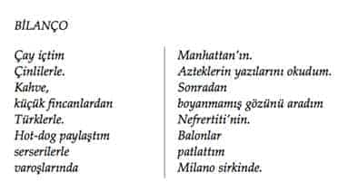
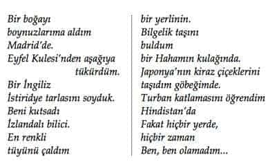

7.5.
Friedrich Nietzsche (1844-1900), Yunanlıların Trajik Çağında Felsefe adlı ünlü yapıtında, Anaksimandros’un anıtsal aforizmasına yer verir:
“Şeylerin nesneleri nerede ise, onlar zorunlu olarak orada yok olacaklardır. Çünkü, zamanın düzenine uygun olarak cezalarını çekmeleri ve yaptıkları haksızlıklardan ötürü yargılanmaları gerekir”.
Nietzsche, bu son derece önemli tespitin ardından hemen kendi düşüncesini yazar:
“Ey, gerçek bir kötümserin esrarlı deyişi, Grek felsefesinin sınır taşı üzerine yazılmış Orakl sözü başlığı. Seni nasıl yorumlamalıyız?...”71
Bugün artık ne Anaksimandros’un ne de Nietzsche’nin yazılarını pek fazla yorumlamak gerekir. Sözü Orakl biçeminde sürdürürsek: Olması gerekenler olmuş. Ve bundan sonra da olmaya devam edecektir.
Foucault’un tespit ettiği gibi, “Doğal tarih biyoloji haline geldiğinde... insan, bir bilgi için nesne ve bilen için de özne olan ikircikli konumun ve arkeolojik bir değişimin derin hareketinin içinde, tabi kılınmış bağımsız, seyredilen seyirci... konumuna gelmiştir. İnsan ağır bir entropi/dağılma sürecine girdiğini duyumsamaya başlamış. İnsanın –yüzünün– tıpkı denizin sınırlarındaki bir kum görüntüsü gibi yavaş yavaş kaybolacağı olgusu gündeme gelmiştir.72
Olguların gerçek yüzü hemen hemen her zaman sanat yapıtlarında, romanlarda, şiirlerde ekonomi-politik tespitlerden çok daha açık belirlenmiştir. Bu bağlamda, roman, insan gerçeğini çok somut sergilemiştir.73
Örneğin Rus romancısı İvan Gonçarov’un başkaldırısı ve inkârı belki Nietzsche’ninkinden bile çok daha köklüdür. Gonçarov’un (1812-1891), 1857 yılında sergilediği Oblomov tipi, ülkesi Oblomovka’dan kopmuş ancak yeni modern yaşam tarzlarının gerektirdiği toplumsallaşmaya da uyamamıştır. Oblomov, bu büyük ikilem arasında hiç olmazsa biyolojik varlığını sürdürebilmek kaygısıyla, odasına kapanmış ve yatağından çıkmaz olmuştur. Oblomov, bilmeden de olsa bir kötülük yapabilirim kaygısıyla sevdiği tek insan olan Olga’yı bile terk ederek kendi iç dünyasına çekilmiştir.
Ancak Oblomov hiç olmazsa evinde ve yatağının içinde, kendi duygu ve düşünceleriyle görece mutlu yaşamış, güzel düşler kurabilmiştir:
“Sabahleyin yataktan kalkıp kahvaltı edip divana uzanınca başını ellerinin arasına alır, gücünü kuvvetini esirgemeden düşünceye dalardı. Sonunda kafası bu sıkı çalışmadan yorulur ve rahat bir vicdanla kendi kendine: Eh, bugün insanlık için yeterince çalıştım, derdi. O zaman Oblomov biraz dinlenmeye karar verir, çalışma yatışını değiştirerek daha rahat, hülyalara daha elverişli bir yatışa uzanırdı. Ciddi işleri bir yana bırakarak kendi içine kapanmak, kendi yarattığı bir hayal dünyasında yaşamak Oblomov’un en büyük zevki idi.”
“Başka bir gün insanların ahlaksızlıklarına, sahteliklerine, iftiralarına, dünyayı saran kötülüğe karşı bir isyan duyar, insanlara çürük yanlarını göstermek dileğiyle yanardı. İçinde bir yığın düşünce, denizin dalgaları gibi birbirini kovalar, eylem haline gelir, kanını coşturur; damarları şişer; bedeni esrarlı bir güçle gerilir, niyetler taşkın birer tutku halini alırdı.”74
Samuel Beckett, Malone Ölüyor romanında, Oblomov’dan yüzyıl sonra, İkinci Dünya Savaşı’nı, Auschwitz toplama kamplarını, Hiroşima’yı yaşamış insanın durumunu olanca çıplaklığıyla sergilemiştir.
Burada Malone’nin durumu, Oblomov’dan çok farklıdır. Malone, düş kurmak için değil –artık– ölmek için girmiştir yatağa. Tıpkı Samuel Beckett’in, yaşamının sonunda evinden ayrılıp, yaşlılar evine gitmesi ve orada ölmesi gibi... Malone: “Gözden uzak durmak istiyorsanız bütün yapacağınız dümdüz yatmaktır. Heyecan duymadan, hareketsiz, ne sıcak ne soğuk, ılık...” der. Anlamlı yaşamaktan umudunu kesen Malone, “Önemli olanın yemek yemek ve dışkılamak olduğunu söyler; bir tabak, bir oturak; hepsi bu kadar, der ve ikisini yan yana kor masanın üstüne...”75
Malone, sıkıntıdan patlamak üzeredir. Geçmiş günlerini yeniden anımsamaya, iki ucu da açılmış bir küçük kalemle bir küçük deftere bir şeyler yazmaya çalışır... en büyük korkusu, ölmeden önce anılarının ve küçük kaleminin tükenmesidir... Sonra ne yapacağını bilememesi, korkunç bir kâbus olur... Kendisini bulunduğu yataktan kaldırıp pencereden atmayı düşler fakat hareket edemediğini anımsar...
Samuel Beckett, sahte cinselliğin gerçek yüzünü burada çok açık sergilemiştir...
Malone, öncelikle iki kişinin ne cesaretle birbirlerine sarılabildiklerine şaşar... Sonra, umutsuzluğun gücüyle birbirlerini kucakladıkları kararını verir. Ama bunun da, boşuna olduğunu, çünkü herbiri kendi sınırlarına çekilmiş iki ayrı vücudun bulunduğunu düşünür. Herbirinin ötekine umut bağlayarak birbirlerine sarılmalarından ne sonuç alabileceklerini anlayamaz bir türlü... Sonra, gözlemlerini sürdürür.
Erkek (Macmann), cinsel organını ikiye katlayıp, parmaklarıyla, yastığı kılıfa geçirir gibi eşinin organına sokmaya uğraşıyordu. Cesaretleri kırılmak bir yana dursun, istekle sarılmışlardı yaptıkları işe, sonunda, tamamen iktidarsız olmalarına karşın, derinin yumuşaklığı, düş gücü falan derken, kuru ve yorgun organlarıyla kasvetli bir hazza bile ulaşmayı başardılar...76 Ellerinden geldiğince çiftleştiler. Ne aptalım ben. Şimdi anlıyorum, birbirlerini seviyor olmalılar, demek böyle yapılıyor bu... Köpekler gibi.77
Samuel Beckett’te, Hölderlin romantizminden hiçbir iz yoktur. Her şey olabildiğince açık ve nettir. Olduğu gibidir. Neyse odur. Doğal doyum, kültür/uygarlık sayesinde engellenince, eros/haz, Pervers bir tiksintiye dönüşür.
İnsanın, insancıl (hümanist) bir dünya kurabileceği düşünden uyanıp, kendi kendisini (bile) tahrip ve inkâr ettiğinin, öznenin özünün yitirildiğinin, konuşmanın kaybolduğunun, bilincin dağıldığının (Heidegger, Horkheimer/Adorno, Habermas) sezinlenmeye başlandığı ilk büyük darbe, Birinci Dünya Savaşında yaşanmaya başlanmıştır...78
İkinci Dünya Savaşı, öznenin bu geri dönüşsüz yıkılış/dağılış sürecini daha da hızlandırmıştır. Düşünen, duyan, kaygılanan özne dünyanın hemen her yerinde gerek kapitalist, gerekse de sosyalist düzenlerde, politik, teknik/teknolojik, entelektüel düzeylerde tahrip edilmişlerdir. Düşünen özne devre dışı bırakılmış. “Umumi huzuru bozanlar” likide edilmişlerdir.
Modern yaşam, insana, yaşamın öznesi olabilme olasılığının yitirildiğinin haberini verdikten sonra, özne, artık eski dinginliğini ve güvencesini de yitirmiş. Her teknolojik gelişme, öznenin güçsüzlüğünü dağılabilirliğini biraz daha yakından göstermiştir. Teknik donanımlar ve devlet terörleri özneyi her geçen gün biraz daha çözmüştür.
Albert Camus, Düşüş romanında, 20. yüzyılın toplumsal yapısını, insanlar arası ilişkilerini birkaç satırla somutlaştırmıştır:
“Bizim toplumumuz, insanları bu türlü harcamak için örgütlenmiştir. İşitmişsinizdir elbette, Brezilya ırmaklarında minicik balıklar varmış, dikkatsiz bir yüzücü buldular mı, binlercesi birden saldırıp, birkaç saniye içinde, hızla, minicik lokmalar kopararak zavallıyı yer, bitirir, tertemiz iskeletini bırakırlarmış. İşte onların örgütlenmesi de öyle. “Temiz hayat ister misiniz?” Herkes gibi siz de, evet dersiniz. Nasıl hayır denir? “Pekiyi derler, sizi temizleyeceğiz. İşte size bir iş, bir aile, düzenli eğlenceler.” Ve minicik dişler etinizi kemirmeye başlar, kemiğinize dek. Ama haksızlık etmeyelim. Onların düzeni demek doğru değil. Bizim düzenimiz bu: kim kimi temizlerse...”79 İşte Homo sapiens’in ulaştığı toplumsallaşma düzeni budur.
Günter Grass, Teneke Trampet romanında eleştirel gözlemlerini, doğum öncesi döneme değin götürür. Burada romanın kahramanı Oskar –olması gerektiği gibi– sonunda, “akıl ve ruh hastalıkları kliniğine” kapatılır. Anılarını burada gizlice yazar. Onun yaşamöyküsünü bu anılarından öğreniriz. Oskar, daha ana rahminden ilk çıktığı, göbek kordonunun henüz ebe tarafından kesilmediği anda, çevresindeki insanların, anasının ve kendisini babası sanan adamın –rezilcesine– ikiyüzlülüklerini görür... Kendisinin yaşam boyu tek başına yapayalnız kalacağını anlar... Oskar, daha başlamadan yaşama isteğini yitirir... Ne yazık ki ebe hanım o sıra göbek bağını kesmiştir... Oskar, artık bu dünyadadır. Ama Oskar, daha o an düşünür... Ve gelişmiş bir insan olarak kendisini bu insanlara –bu topluma– teslim etmemek için, üç yaşında bir parmak çocuk, bir bücür olarak kalmaya karar verir... Büyümesini durdurur.80 Büyümez. Ve erişkin insanlar arasına, onların dünyalarına, toplumlarına katılmaz. Artık ne Nazi Partisi’ne girmek zorundadır ne de savaş yanlısı olmak; fakat çevresine bu denli eleştirel bakan, onlar gibi “büyüyemeyen” “toplumsallaşamayan” bir insanın sonu da “akıl ve ruh hastalıkları kliniği” olur.
Melankolik yaşam, özünde hep toplumsal ve varoluşsal bir eleştiri taşımış. Ancak bu köktenci eleştiri ve inkâr, gene hep kendi bireysel güçsüzlüğünü de birlikte üretmiştir.
Sürekli olarak toplumdan kopmanın acılı ikilemi duyumsanmış. Özgürleşme uğruna zamanın içinden bile çıkmak, zamana bile bağımlı olmaktan kurtulma çabası, sonunda olağanüstü bir yalnızlığın ve Hiç’liğin sınırında, donmuş, taşlaşmış bir zamanı yaşamanın dayanılması zor acısını birlikte getirmiştir. 81, 82
Burada diğer insanları da kapsayan ikilemli öfke, güvensizlik/suçluluk duyguları çok kez kişinin kendi özbenliğini bile yitirmesine dek uzanabilmiştir. Tüm olup bitenleri anlamamıza, Hildegard Maria Rauchfuss’un Bilanço (Bilanz) adlı şiiri belki biraz daha yardımcı olabilir.83


Dürer’in yapıtını yeniden anımsarsak, melankolik kadın, başarısız kalmış, her tarafı harabeye dönmüş, parçalanmış bir çalışmanın sonuçlarına şaşkınlıkla bakmaktadır. Melankolik insan, yaratıcılık ile tinsel-bedensel felç, bir tür donakalış arasındaki olağanüstü gerilimli ortamda, bir şeylerin yanlışlığını sezinlemekte, daha doğrularının yapılabileceğini düşlemekte ama –nedense– bir türlü gönlünce daha güzel bir şeyler başaramamanın acısını yaşamaktadır. Sanatın ve felsefenin ya da en yalınından sahici ve anlamlı bir yaşamın dölyatağı, belki de tam da bu gerilimli ortamdır. Bilemiyoruz.
Melankolik insan, “yaralı ve yanlış bir yaşamın yadsınması olarak”, sonsuzluk/geçicilik, ilerleme/tahrip, umut/umutsuz-luk, dağılma/yoğunlaşma, yapıcı/yıkıcı, düş-uyku/uyanıklık, gerçek/fiksiyon gerilimleri arasındaki bu garip alegorik dünyada suskun bir bekleyiş içinde, kendi hüznü ve çelişkileri içinde yaşamayı kendisine yaşam tarzı ve de haz kaynağı edinmiş gibidir.84
Melankolik insan, tarih boyu hep otoriteye karşı çıkmış. Antikçağda mitolojinin tutsağı olmaktan, ortaçağda dinsel bağnazlıklardan, Aydınlanma Çağı’nda rasyonalizmin, doğa ve ruhbilimlerinin sultasında yaşamaktan yakınmış... Hep bir gün özgür olmayı düşlemiştir. Bugün bu düşler gerçekleşir gibi olmuş; günümüzün “organize, yöntemli ateist” (Heidegger)85 ortamında, gökyüzünün boş, hatta steril olduğu anlaşıldıktan sonra, “hakikati” arama çabasından bile kurtulunmuş, kusursuz ve komple bir kaosun içinde yaşanmaya başlanmış. Ancak gelin görün ki melankolik eğilimli insanlar, bu kez de bu son derece sıkıcı kaos ve felaket ortamında Van Gogh’un ağzından, “bu dünyaya bakarak tanrı hakkında hüküm vermek doğru olmaz, bu dünya onun başarısız bir deneyimi olabilir,” demeye ve yeniden başa dönüp, “bizi ancak bir tanrı kurtarabilir”(Heidegger) deyip, “anasız/babasız toplumda yaşamanın” (Freud) sıkıntısını, acısını herkesten çok duyumsamaya ve gene herkesten çok hüzünlenmeye başlamıştır.
Bir ortaçağ söylencesine göre, azizler yüreklerindeki başkaldırıyı ve inançsızlığı bastırmak için sürekli ibadet ederler, buna karşın, en içten duaları ateistler okurlarmış. Bu nedenle de azizler ile ateistlerin aralarında gizemli bir benzerliğin bulunduğu düşünülürmüş. Azizlere gizli inançsızlar, ateistlere ise tebdili kıyafet etmiş müminler gözüyle bakılırmış.
Dostoyevski’nin Ecinniler romanında, Piyotr Stpanoviç, ateist Krilov’a, bir papazdan çok İsa’ya inandığını söylediği zaman Krilov, dünyada tanrının olmadığını ve kendi boyun eymezliğini ve özgürlüğünü kanıtlamak için intihar etmeden önce, o (İsa) olmasaydı dünyada yaşamın hiç bir anlamı kalmazdı, diye yanıt verir. Ecinniler’in sonuna değin anlayamayız, Krilov’un bir ateist mi yoksa bir aşkın/aziz mi olduğunu. Tıpkı Dostoyevski’nin bir dindar mı yoksa bir dinsiz mi olduğunu bugün bile anlayamadığımız gibi.
Olasılıkla burada sorun, yeteri yoğunlukta –usta işi– duygulanıp hüzünlenebilmenin, insanın kendi içinde derinleşmesinin, keyfine varmakta yatmaktadır. Yoğun duygu birikimi oluşturabilen insanın hangi çağda yaşadığının ve hangi sorunlarla karşılaştığının pek de önemi olmamaktadır.86, 87, 88
Cemal Süreya, tam da bu noktayı hem de sadece iki dizeyle ne de güzel anlatır: “Bilinir ne usta olduğum içlenmek zanaatında/Canımla besliyorum şu hüznün kuşlarını.”
Bu tür yoğun duygulanım durumlarında çok kez varoluşun acılı sefaleti aşılabilmekte, trajik fakat onurlu, (bazen) estetik özellikleri (bile) olabilen yepyeni bir benlikle karşılaşılabilmektedir.
Kabalıklardan ve kalabalıklardan uzakta, hiçbir yerden ve hiçbir kimseden, hiçbir şey beklemeden yaşanan yalnızlıkları salt toplumdan uzaklaşma/atomlaşma/izolasyon olarak (da) değerlendirmemek gerekebilir.
Bu tür yalnızlıklar, içselleşmeler, kendi kendisiyle buluşmalar, her şeyden kurtulup, hiçbir dayanak noktasının kalmadığının duyumsandığı, insanın kendi kendisini yarattığı anlardaki olağanüstü heyecanlar, coşkular, hazlar, güzelliklerle dolu serüvenler olarak da düşlenebilir. Melankolik yaşamın satır aralarında uyumsuzluğun, toplumsallaşamamanın, her dem günahkârlığın ve saçmalığın keyfi de yaşanır.
Uçlarda ve çelişkiler içinde yaşayan melankolik, taşlaşmış bir şimdiki-zamanı yaşamaktansa, Hiç’lik içinde (bile) bir umut düşleyebilmektedir... Melankolik kendi güçsüzlüğünü görür ama buna karşın çare olarak dinsel inançlara sarılmaz. Dindarlığın onu sıradanlaştıracağını bilir... Kendi içine dönmesi, güçsüzlüğü, gücü olabilmekte... Bu son derece güçsüz/güçlü dönemlerinde, hiç olmazsa kendi dışında ne bir tanrıya ne yöneticilere ve ne de devlete gereksinimi olmakta ve tam da bu anlarda sonsuz bir acı ve bir o kadar da haz duyumsamaktadır.
Sonuç olarak belki son bir noktanın altı çizilebilir: Çoğunluk/azınlık hesaplamalarını bir yana bırakırsak, hiçbir sisteme, dogmaya bağlı olmayan, kendi yanlışlıklarını, toplumsallaşamayışlarını çok iyi bilen ve bunu açıkça söyleyen melankoliklerde olumsuzmuş gibi görünen kimi eksikliklerin bazen, topluma uyum sağlamış normaller karşısında olumlu/erdemli fazlalıklar89 olduğu görülebilir.
Ayrıca biraz daha ileri gidip, varoluşun salt formaliteye dönüştüğü günlük yaşamın barbarlığı içinde uyumlu normallerin hangi (a)normalliklerinden dolayı tepki göstermeden yaşayabildikleri sorulabilir.
Burada, belki son bir söz olarak Freud’un Goethe’den alıntılayıp değiştirerek sıkça tekrarladığı dizeleri, biz de biraz daha değiştirip anımsayabiliriz:
“Anlamayacak olanlara söyleme sakın / Bilebileceğin en güzel şeyleri”.
Nisan, 1997
Beylerbeyi / İstanbul